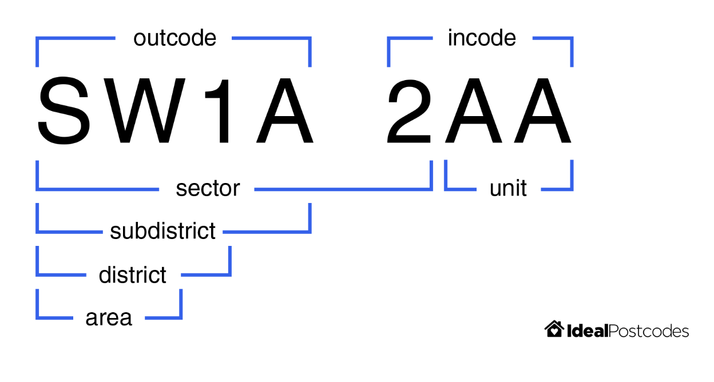

Feature Engineering for Data Linkage¶
During record linkage, the features in a given dataset are used to provide evidence as to whether two records are a match. Like any predictive model, the quality of a Splink model is dictated by the features provided.
Below are some examples of features that be created from common columns, and how to create more detailed comparisons with them in a Splink model.
Postcodes¶
A sensible approach to comparing postcodes is to consider their consituent components. For example, UK postcodes can be broken down into the following substrings:
 See image source for more details.
Splink already includes a pre-built postcode comparison template which does this for you, generating by default a comparison with levels for an exact match on full postcode, sector, district and area in turn. These individual postcode components are engineered under-the-hood using the regex_extract argument (see below and comparison_templates.ipynb for more details).
Code examples to use the comparison template:
import splink.duckdb.duckdb_comparison_template_library as ctl
pc_comparison = ctl.postcode_comparison("postcode")
print(pc_comparison.human_readable_description)
import splink.spark.spark_comparison_template_library as ctl
pc_comparison = ctl.postcode_comparison("postcode")
print(pc_comparison.human_readable_description)
import splink.athena.athena_comparison_template_library as ctl
pc_comparison = ctl.postcode_comparison("postcode")
print(pc_comparison.human_readable_description)
Output
Comparison 'Exact match on full postcode vs. exact match on sector vs. exact match on district vs. exact match on area vs. all other comparisons' of "postcode".
Similarity is assessed using the following ComparisonLevels:
- 'Null' with SQL rule: "postcode_l" IS NULL OR "postcode_r" IS NULL
- 'Exact match postcode' with SQL rule: "postcode_l" = "postcode_r"
'Exact match Postcode Sector' with SQL rule: regexp_extract("postcode_l", '^[A-Z]{1,2}[0-9][A-Z0-9]? [0-9]') = regexp_extract("postcode_r", '^[A-Z]{1,2}[0-9][A-Z0-9]? [0-9]')
'Exact match Postcode District' with SQL rule: regexp_extract("postcode_l", '^[A-Z]{1,2}[0-9][A-Z0-9]?') = regexp_extract("postcode_r", '^[A-Z]{1,2}[0-9][A-Z0-9]?')
'Exact match Postcode Area' with SQL rule: regexp_extract("postcode_l", '^[A-Z]{1,2}') = regexp_extract("postcode_r", '^[A-Z]{1,2}')
'All other comparisons' with SQL rule: ELSE
Note that the 'Exact match Postcode District' level also captures matches on subdistricts where they exist in the data.
However, performing comparisons based on substrings alone doesn't always give the best sense of whether two postcodes are close together since locations which are geographically close can be in different postcode regions e.g. London postcodes starting 'N' vs 'SW'.
Fortunately, Splink includes functions cll.distance_in_km_level() and cl.distance_in_km_at_thresholds() to calculate the physical distance between two sets of latitude and longitude coordinates.
Users have the option to include cll.distance_in_km_level() as additional levels in the postcode_comparison() template by supplying lat_col, long_col and km_thresholds arguments. Doing so can help to improve results. Latitude and longitude coordinates can be derived from a postcode column as described in the example below.
Example¶
There are a number of open source repositories of geospatial data that can be used for linkage, one example is geonames.
Below is an example of adding latitude and longitude columns from geonames to create a more nuanced comparison.
Read in a dataset with postcodes:
import pandas as pd
df = pd.read_parquet("/PATH/TO/DEMO/DATA/historical_figures_with_errors_50k.parquet")
df["postcode_fake"] = df["postcode_fake"].str.upper()
df.head()
Output
| unique_id | cluster | full_name | first_and_surname | first_name | surname | dob | birth_place | postcode_fake | gender | occupation | |
|---|---|---|---|---|---|---|---|---|---|---|---|
| 0 | Q2296770-1 | Q2296770 | thomas clifford, 1st baron clifford of chudleigh | thomas chudleigh | thomas | chudleigh | 1630-08-01 | devon | TQ13 8DF | male | politician |
| 1 | Q2296770-2 | Q2296770 | thomas of chudleigh | thomas chudleigh | thomas | chudleigh | 1630-08-01 | devon | TQ13 8DF | male | politician |
| 2 | Q2296770-3 | Q2296770 | tom 1st baron clifford of chudleigh | tom chudleigh | tom | chudleigh | 1630-08-01 | devon | TQ13 8DF | male | politician |
| 3 | Q2296770-4 | Q2296770 | thomas 1st chudleigh | thomas chudleigh | thomas | chudleigh | 1630-08-01 | devon | TQ13 8HU | politician | |
| 4 | Q2296770-5 | Q2296770 | thomas clifford, 1st baron chudleigh | thomas chudleigh | thomas | chudleigh | 1630-08-01 | devon | TQ13 8DF | politician |
Then read in a list of GB postcodes downloaded from geonames.
import pandas as pd
names = ['country_code', 'postal_code', 'place_name', 'admin_name1', 'admin_code1', 'admin_name2', 'admin_code2', 'admin_name3', 'admin_code3', 'latitude', 'longitude','accuracy']
postcodes = pd.read_csv("GB_full.txt", sep="\t", header = None, names=names)
postcodes.head(5)
Output
| country_code | postal_code | place_name | admin_name1 | admin_code1 | admin_name2 | admin_code2 | admin_name3 | admin_code3 | latitude | longitude | accuracy | |
|---|---|---|---|---|---|---|---|---|---|---|---|---|
| 0 | GB | AL3 8QE | Slip End | England | ENG | Bedfordshire | nan | Central Bedfordshire | E06000056 | 51.8479 | -0.4474 | 6 |
| 1 | GB | AL5 3NG | Harpenden | England | ENG | Bedfordshire | nan | Central Bedfordshire | E06000056 | 51.8321 | -0.383 | 6 |
| 2 | GB | AL5 3NS | Hyde | England | ENG | Bedfordshire | nan | Central Bedfordshire | E06000056 | 51.8333 | -0.3763 | 6 |
| 3 | GB | AL5 3QF | Hyde | England | ENG | Bedfordshire | nan | Central Bedfordshire | E06000056 | 51.8342 | -0.3851 | 6 |
| 4 | GB | B10 0AB | Birmingham | England | ENG | West Midlands | nan | Birmingham District (B) | E08000025 | 52.4706 | -1.875 | 6 |
Now combine the lat-long coordinates from the GB_full.txt lookup.
df_with_coordinates = df.merge(postcodes[["postal_code", "latitude", "longitude"]],
left_on="postcode_fake",
right_on="postal_code",
how="left")
df_with_coordinates = df_with_coordinates.rename({'postcode_fake':'postcode'}, axis=1)
df_with_coordinates.head()
Output
| unique_id | cluster | full_name | first_and_surname | first_name | surname | dob | birth_place | postcode | gender | occupation | postal_code | latitude | longitude | |
|---|---|---|---|---|---|---|---|---|---|---|---|---|---|---|
| 0 | Q2296770-1 | Q2296770 | thomas clifford, 1st baron clifford of chudleigh | thomas chudleigh | thomas | chudleigh | 1630-08-01 | devon | TQ13 8DF | male | politician | TQ13 8DF | 50.6927 | -3.8139 |
| 1 | Q2296770-2 | Q2296770 | thomas of chudleigh | thomas chudleigh | thomas | chudleigh | 1630-08-01 | devon | TQ13 8DF | male | politician | TQ13 8DF | 50.6927 | -3.8139 |
| 2 | Q2296770-3 | Q2296770 | tom 1st baron clifford of chudleigh | tom chudleigh | tom | chudleigh | 1630-08-01 | devon | TQ13 8DF | male | politician | TQ13 8DF | 50.6927 | -3.8139 |
| 3 | Q2296770-4 | Q2296770 | thomas 1st chudleigh | thomas chudleigh | thomas | chudleigh | 1630-08-01 | devon | TQ13 8HU | politician | TQ13 8HU | 50.6876 | -3.8958 | |
| 4 | Q2296770-5 | Q2296770 | thomas clifford, 1st baron chudleigh | thomas chudleigh | thomas | chudleigh | 1630-08-01 | devon | TQ13 8DF | politician | TQ13 8DF | 50.6927 | -3.8139 |
Now that coordinates have been added, a more detailed postcode comparison can be produced using the postcode_comparison template:
import splink.duckdb.duckdb_comparison_template_library as ctl
pc_comparison = ctl.postcode_comparison(
"postcode",
lat_col="lat",
long_col="long",
km_thresholds=[1, 10, 50]
)
print(pc_comparison.human_readable_description)
import splink.spark.spark_comparison_template_library as ctl
pc_comparison = ctl.postcode_comparison(
"postcode",
lat_col="lat",
long_col="long",
km_thresholds=[1, 10, 50]
)
print(pc_comparison.human_readable_description)
import splink.athena.athena_comparison_template_library as ctl
pc_comparison = ctl.postcode_comparison(
"postcode",
lat_col="lat",
long_col="long",
km_thresholds=[1, 10, 50]
)
print(pc_comparison.human_readable_description)
Output
Comparison 'Exact match on full postcode vs. exact match on sector vs. exact match on district vs. exact match on area vs. Postcode within km_distance thresholds 1, 10, 50 vs. all other comparisons' of "postcode", "long" and "lat".
Similarity is assessed using the following ComparisonLevels:
- 'Null' with SQL rule: regexp_extract("postcode_l", '^[A-Z]{1,2}[0-9][A-Z0-9]? [0-9][A-Z]{2}$') IS NULL OR regexp_extract("postcode_r", '^[A-Z]{1,2}[0-9][A-Z0-9]? [0-9][A-Z]{2}$') IS NULL OR regexp_extract("postcode_l", '^[A-Z]{1,2}[0-9][A-Z0-9]? [0-9][A-Z]{2}$') =='' OR regexp_extract("postcode_r", '^[A-Z]{1,2}[0-9][A-Z0-9]? [0-9][A-Z]{2}$') =='' - 'Exact match postcode' with SQL rule: "postcode_l" = "postcode_r" - 'Exact match Postcode Sector' with SQL rule: regexp_extract("postcode_l", '^[A-Z]{1,2}[0-9][A-Z0-9]? [0-9]') = regexp_extract("postcode_r", '^[A-Z]{1,2}[0-9][A-Z0-9]? [0-9]') - 'Exact match Postcode District' with SQL rule: regexp_extract("postcode_l", '^[A-Z]{1,2}[0-9][A-Z0-9]?') = regexp_extract("postcode_r", '^[A-Z]{1,2}[0-9][A-Z0-9]?') - 'Exact match Postcode Area' with SQL rule: regexp_extract("postcode_l", '^[A-Z]{1,2}') = regexp_extract("postcode_r", '^[A-Z]{1,2}') - 'Distance less than 1km' with SQL rule: cast( acos( case when ( sin( radians("lat_l") ) * sin( radians("lat_r") ) + cos( radians("lat_l") ) * cos( radians("lat_r") ) * cos( radians("long_r" - "long_l") ) ) > 1 then 1 when ( sin( radians("lat_l") ) * sin( radians("lat_r") ) + cos( radians("lat_l") ) * cos( radians("lat_r") ) * cos( radians("long_r" - "long_l") ) ) < -1 then -1 else ( sin( radians("lat_l") ) * sin( radians("lat_r") ) + cos( radians("lat_l") ) * cos( radians("lat_r") ) * cos( radians("long_r" - "long_l") ) ) end ) * 6371 as float ) <= 1 - 'Distance less than 10km' with SQL rule: cast( acos( case when ( sin( radians("lat_l") ) * sin( radians("lat_r") ) + cos( radians("lat_l") ) * cos( radians("lat_r") ) * cos( radians("long_r" - "long_l") ) ) > 1 then 1 when ( sin( radians("lat_l") ) * sin( radians("lat_r") ) + cos( radians("lat_l") ) * cos( radians("lat_r") ) * cos( radians("long_r" - "long_l") ) ) < -1 then -1 else ( sin( radians("lat_l") ) * sin( radians("lat_r") ) + cos( radians("lat_l") ) * cos( radians("lat_r") ) * cos( radians("long_r" - "long_l") ) ) end ) * 6371 as float ) <= 10 - 'Distance less than 50km' with SQL rule: cast( acos( case when ( sin( radians("lat_l") ) * sin( radians("lat_r") ) + cos( radians("lat_l") ) * cos( radians("lat_r") ) * cos( radians("long_r" - "long_l") ) ) > 1 then 1 when ( sin( radians("lat_l") ) * sin( radians("lat_r") ) + cos( radians("lat_l") ) * cos( radians("lat_r") ) * cos( radians("long_r" - "long_l") ) ) < -1 then -1 else ( sin( radians("lat_l") ) * sin( radians("lat_r") ) + cos( radians("lat_l") ) * cos( radians("lat_r") ) * cos( radians("long_r" - "long_l") ) ) end ) * 6371 as float ) <= 50 - 'All other comparisons' with SQL rule: ELSE
or by using cll.distance_in_km_level() in conjunction with other comparison levels:
import splink.duckdb.duckdb_comparison_level_library as cll
postcode_comparison = {
'output_column_name': 'postcode',
'comparison_description': 'Postcode',
'comparison_levels': [
cll.null_level("postcode"),
cll.exact_match_level("postcode"),
cll.distance_in_km_level("latitude", "longitude", 1),
cll.distance_in_km_level("latitude", "longitude", 10),
cll.distance_in_km_level("latitude", "longitude", 50),
cll.else_level()
],
}
import splink.spark.spark_comparison_level_library as cll
postcode_comparison = {
'output_column_name': 'postcode',
'comparison_description': 'Postcode',
'comparison_levels': [
cll.null_level("postcode"),
cll.exact_match_level("postcode"),
cll.distance_in_km_level("latitude", "longitude", 1),
cll.distance_in_km_level("latitude", "longitude", 10),
cll.distance_in_km_level("latitude", "longitude", 50),
cll.else_level()
],
}
import splink.athena.athena_comparison_level_library as cll
postcode_comparison = {
'output_column_name': 'postcode',
'comparison_description': 'Postcode',
'comparison_levels': [
cll.null_level("postcode"),
cll.exact_match_level("postcode"),
cll.distance_in_km_level("latitude", "longitude", 1),
cll.distance_in_km_level("latitude", "longitude", 10),
cll.distance_in_km_level("latitude", "longitude", 50),
cll.else_level()
],
}
Phonetic transformations¶
Phonetic transformation algorithms can be used to identify words that sound similar, even if they are spelled differently. These are particularly useful for names and can be used as an additional comparison level within name comparisons.
For a more detailed explanation on phonetic transformation algorithms, see the topic guide.
Example¶
There are a number of python packages which support phonetic transformations that can be applied to a pandas dataframe, which can then be loaded into the DuckDBLinker. For example, creating a Double Metaphone column with the phonetics python library:
import pandas as pd
import phonetics
df = pd.read_parquet("PATH/TO/DATA/fake_1000.parquet")
# Define a function to apply the dmetaphone phonetic algorithm to each name in the column
def dmetaphone_name(name):
if name is None:
pass
else:
return phonetics.dmetaphone(name)
# Apply the function to the "first_name" and surname columns using the apply method
df['first_name_dm'] = df['first_name'].apply(dmetaphone_name)
df['surname_dm'] = df['surname'].apply(dmetaphone_name)
df.head()
Output
| unique_id | first_name | surname | dob | city | group | first_name_dm | surname_dm | ||
|---|---|---|---|---|---|---|---|---|---|
| 0 | 0 | Julia | 2015-10-29 | London | hannah88@powers.com | 0 | ('JL', 'AL') | ||
| 1 | 1 | Julia | Taylor | 2015-07-31 | London | hannah88@powers.com | 0 | ('JL', 'AL') | ('TLR', '') |
| 2 | 2 | Julia | Taylor | 2016-01-27 | London | hannah88@powers.com | 0 | ('JL', 'AL') | ('TLR', '') |
| 3 | 3 | Julia | Taylor | 2015-10-29 | hannah88opowersc@m | 0 | ('JL', 'AL') | ('TLR', '') | |
| 4 | 4 | oNah | Watson | 2008-03-23 | Bolton | matthew78@ballard-mcdonald.net | 1 | ('AN', '') | ('ATSN', 'FTSN') |
Note: Soundex and Metaphone are also supported in phoneitcs
Now that the dmetaphone columns have been added, they can be used within comparisons. For example, using the name_comparison function from the comparison template library.
import splink.duckdb.duckdb_comparison_template_library as ctl
first_name_comparison = ctl.name_comparison(
"first_name",
phonetic_col_name = "first_name_dm")
print(first_name_comparison.human_readable_description)
import splink.spark.spark_comparison_template_library as ctl
first_name_comparison = ctl.name_comparison(
"first_name",
phonetic_col_name = "first_name_dm")
Output
Comparison 'Exact match vs. Names with phonetic exact match vs. First_Name within jaro_winkler thresholds 0.95, 0.88 vs. anything else' of "first_name" and "first_name_dm".
Similarity is assessed using the following ComparisonLevels:
- 'Null' with SQL rule: "first_name_l" IS NULL OR "first_name_r" IS NULL
- 'Exact match first_name' with SQL rule: "first_name_l" = "first_name_r"
- 'Exact match first_name_dm' with SQL rule: "first_name_dm_l" = "first_name_dm_r"
- 'Jaro_winkler_similarity >= 0.95' with SQL rule: jaro_winkler_similarity("first_name_l", "first_name_r") >= 0.95
- 'Jaro_winkler_similarity >= 0.88' with SQL rule: jaro_winkler_similarity("first_name_l", "first_name_r") >= 0.88
- 'All other comparisons' with SQL rule: ELSE
Full name¶
When comparing names, it can be helpful to construct a single comparison for for comparing the forename and surname of two records. If a splink model has a single comparison for forename and surname, one of the major benefits is being able to consider the term frequency of the full name, as well as for forename and surname individually.
For example, in the UK, Mohammed Khan is a relatively common full name despite neither "Mohammed" or "Khan" occurring frequently as forename or surname, respectively.
For more on term frequency, see the dedicated topic guide.
Example¶
It is very simple to create a full name column from a forename and a surname in python.
import pandas as pd
df = pd.read_parquet("PATH/TO/DATA/fake_1000.parquet")
# Create a new column "full_name" by combining "first_name" and "surname" columns
df['full_name'] = df['first_name'] + ' ' + df['surname']
df.head()
Output
| unique_id | first_name | surname | dob | city | group | full_name | ||
|---|---|---|---|---|---|---|---|---|
| 0 | 0 | Julia | 2015-10-29 | London | hannah88@powers.com | 0 | nan | |
| 1 | 1 | Julia | Taylor | 2015-07-31 | London | hannah88@powers.com | 0 | Julia Taylor |
| 2 | 2 | Julia | Taylor | 2016-01-27 | London | hannah88@powers.com | 0 | Julia Taylor |
| 3 | 3 | Julia | Taylor | 2015-10-29 | hannah88opowersc@m | 0 | Julia Taylor | |
| 4 | 4 | oNah | Watson | 2008-03-23 | Bolton | matthew78@ballard-mcdonald.net | 1 | oNah Watson |
Now that the full_name column has been added, it can be used within comparisons. For example, using the forenname_surname_comparison function from the comparison template library.
import splink.duckdb.duckdb_comparison_template_library as ctl
full_name_comparison = ctl.forename_surname_comparison(
"first_name",
"surname",
term_frequency_adjustments=True,
tf_adjustment_col_forename_and_surname="full_name",
)
print(full_name_comparison.human_readable_description)
import splink.spark.spark_comparison_template_library as ctl
full_name_comparison = ctl.forename_surname_comparison(
"first_name",
"surname",
term_frequency_adjustments=True,
tf_adjustment_col_forename_and_surname="full_name",
)
print(full_name_comparison.human_readable_description)
Output
Comparison 'Exact match vs. Forename and surname columns reversed vs. Surname exact match vs. Forename exact match vs. Surname within jaro-winkler threshold 0.88 vs. First_Name within jaro-winkler threshold 0.88 vs. anything else' of "surname" and "first_name".
Similarity is assessed using the following ComparisonLevels:
- 'Null' with SQL rule: ("first_name_l" IS NULL OR "first_name_r" IS NULL) AND ("surname_l" IS NULL OR "surname_r" IS NULL)
- 'Full name exact match' with SQL rule: "first_name_l" = "first_name_r" AND "surname_l" = "surname_r"
- 'Exact match on reversed cols' with SQL rule: "first_name_l" = "surname_r" and "first_name_r" = "surname_l"
- 'Exact match surname' with SQL rule: "surname_l" = "surname_r"
- 'Exact match first_name' with SQL rule: "first_name_l" = "first_name_r"
- 'Jaro_winkler_similarity surname >= 0.88' with SQL rule: jaro_winkler_similarity("surname_l", "surname_r") >= 0.88
- 'Jaro_winkler_similarity first_name >= 0.88' with SQL rule: jaro_winkler_similarity("first_name_l", "first_name_r") >= 0.88
- 'All other comparisons' with SQL rule: ELSE